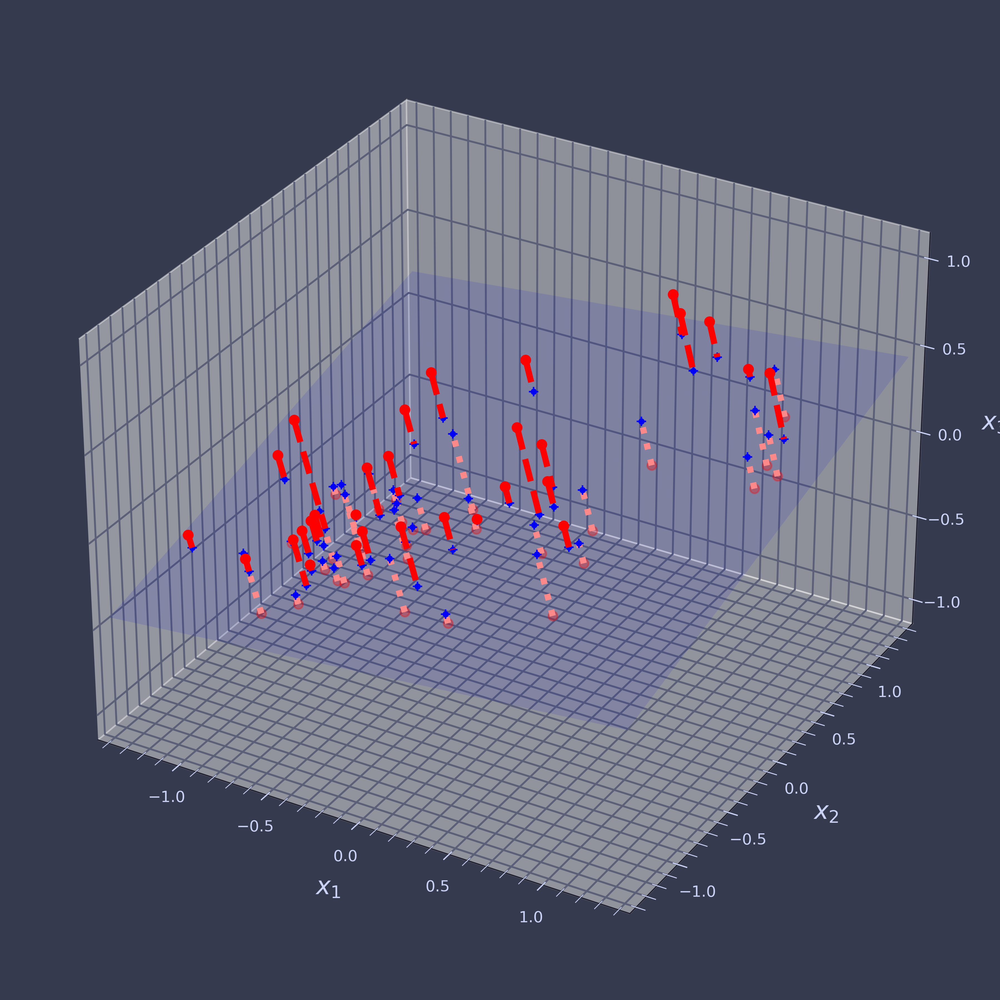
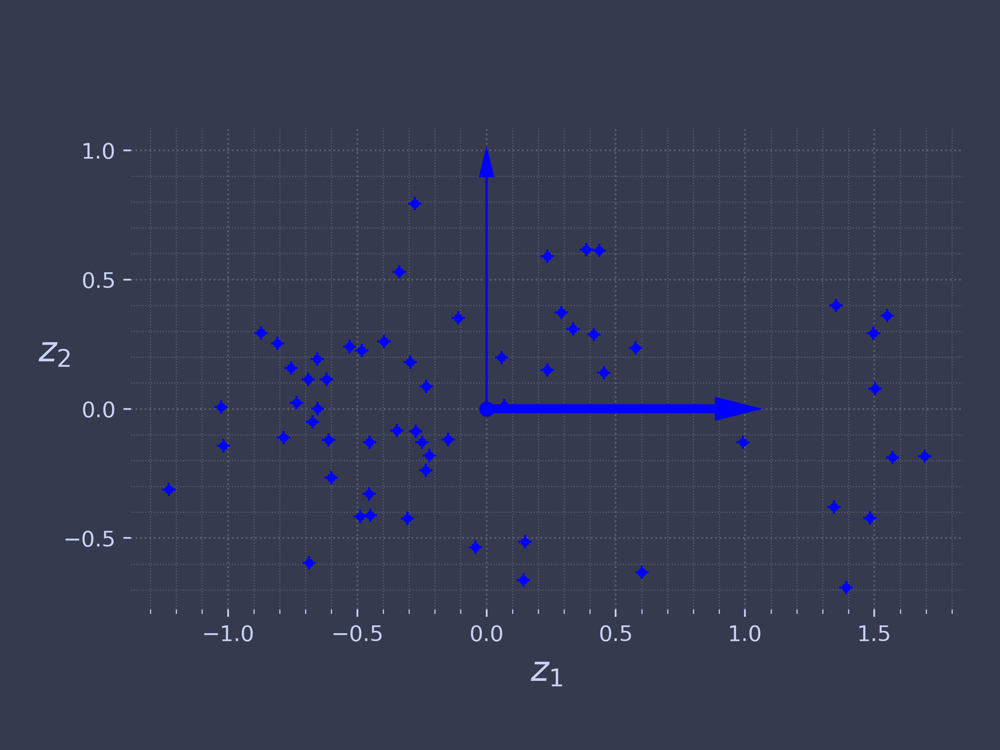
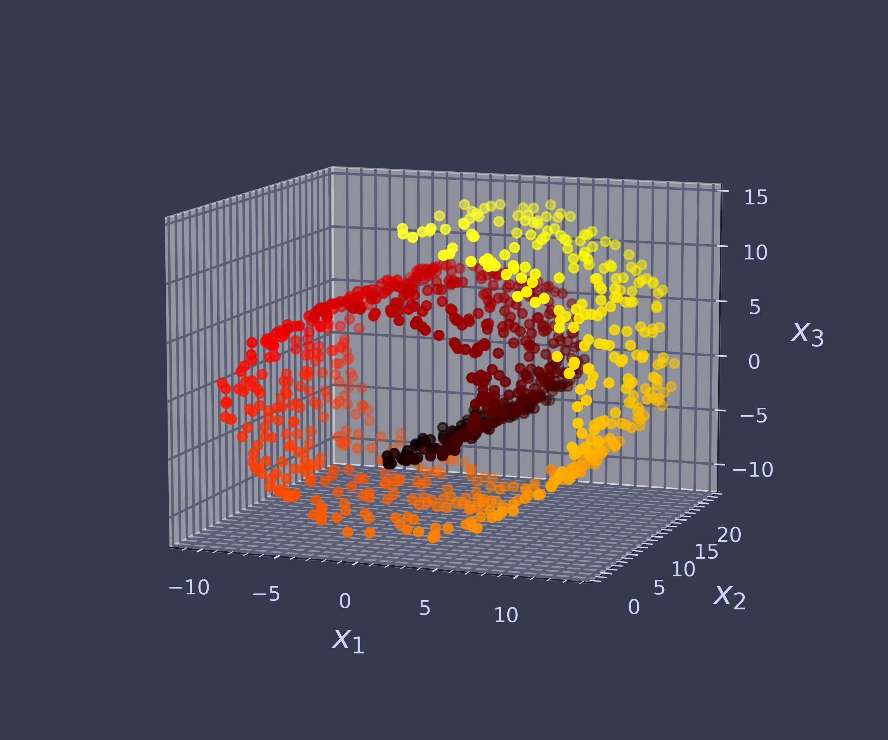
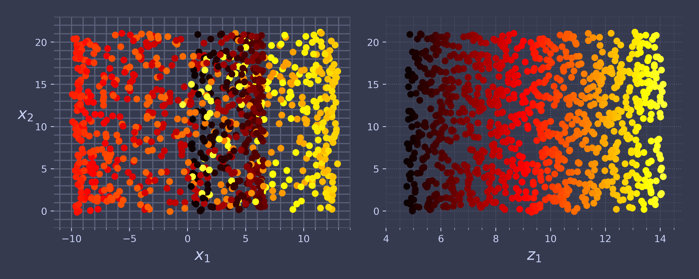

Code for Machine Learning and Data Science II Dimensionality Reduction
Table of Contents
These are the code snippets used in Dimensionality Reduction
part of Machine Learning and Data Science II.
Introduction
The following is a custom package written to handle plotting and other functions required by the lecture.
import ChalcedonPy as cp # custom-pakcage for lecture materials and publications SAVE_PATH = "Dimensionality-Reduction" # sets the default save path style="web" # sets the default rcParams stylce sheet
Principle Component Analysis
import numpy as np from scipy.spatial.transform import Rotation m = 60 X = np.zeros((m, 3)) # initialize 3D dataset np.random.seed(42) angles = (np.random.rand(m) ** 3 + 0.5) * 2 * np.pi # uneven distribution X[:, 0], X[:, 1] = np.cos(angles), np.sin(angles) * 0.5 # oval X += 0.28 * np.random.randn(m, 3) # add more noise X = Rotation.from_rotvec([np.pi / 29, -np.pi / 20, np.pi / 4]).apply(X) X += [0.2, 0, 0.2] # shift a bit
Plot the 3D dataset, with the projection plane.
import matplotlib.pyplot as plt from sklearn.decomposition import PCA pca = PCA(n_components=2) X2D = pca.fit_transform(X) # dataset reduced to 2D X3D_inv = pca.inverse_transform(X2D) # 3D position of the projected samples X_centered = X - X.mean(axis=0) U, s, Vt = np.linalg.svd(X_centered) axes = [-1.4, 1.4, -1.4, 1.4, -1.1, 1.1] x1, x2 = np.meshgrid(np.linspace(axes[0], axes[1], 10), np.linspace(axes[2], axes[3], 10)) w1, w2 = np.linalg.solve(Vt[:2, :2], Vt[:2, 2]) # projection plane coefs z = w1 * (x1 - pca.mean_[0]) + w2 * (x2 - pca.mean_[1]) - pca.mean_[2] # plane X3D_above = X[X[:, 2] >= X3D_inv[:, 2]] # samples above plane X3D_below = X[X[:, 2] < X3D_inv[:, 2]] # samples below plane fig = plt.figure(figsize=(9, 9)) ax = fig.add_subplot(111, projection="3d") # plot samples and projection lines below plane first ax.plot(X3D_below[:, 0], X3D_below[:, 1], X3D_below[:, 2], "ro", alpha=0.3) for i in range(m): if X[i, 2] < X3D_inv[i, 2]: ax.plot([X[i][0], X3D_inv[i][0]], [X[i][1], X3D_inv[i][1]], [X[i][2], X3D_inv[i][2]], ":", color="#F88") ax.plot_surface(x1, x2, z, alpha=0.1, color="b") # projection plane ax.plot(X3D_inv[:, 0], X3D_inv[:, 1], X3D_inv[:, 2], "b+") # projected samples ax.plot(X3D_inv[:, 0], X3D_inv[:, 1], X3D_inv[:, 2], "b.") # now plot projection lines and samples above plane for i in range(m): if X[i, 2] >= X3D_inv[i, 2]: ax.plot([X[i][0], X3D_inv[i][0]], [X[i][1], X3D_inv[i][1]], [X[i][2], X3D_inv[i][2]], "r--") ax.plot(X3D_above[:, 0], X3D_above[:, 1], X3D_above[:, 2], "ro") def set_xyz_axes(ax, axes): ax.xaxis.set_rotate_label(False) ax.yaxis.set_rotate_label(False) ax.zaxis.set_rotate_label(False) ax.set_xlabel("$x_1$", labelpad=8, rotation=0) ax.set_ylabel("$x_2$", labelpad=8, rotation=0) ax.set_zlabel("$x_3$", labelpad=8, rotation=0) ax.set_xlim(axes[0:2]) ax.set_ylim(axes[2:4]) ax.set_zlim(axes[4:6]) set_xyz_axes(ax, axes) ax.set_zticks([-1, -0.5, 0, 0.5, 1]) cp.store_fig("dataset-3d-plot", filepath = SAVE_PATH, style = style, close = True)

fig = plt.figure() ax = fig.add_subplot(1, 1, 1, aspect='equal') ax.plot(X2D[:, 0], X2D[:, 1], "b+") ax.plot(X2D[:, 0], X2D[:, 1], "b.") ax.plot([0], [0], "bo") ax.arrow(0, 0, 1, 0, head_width=0.05, length_includes_head=True, head_length=0.1, fc='b', ec='b', linewidth=4) ax.arrow(0, 0, 0, 1, head_width=0.05, length_includes_head=True, head_length=0.1, fc='b', ec='b', linewidth=1) ax.set_xlabel("$z_1$") ax.set_yticks([-0.5, 0, 0.5, 1]) ax.set_ylabel("$z_2$", rotation=0) cp.store_fig("dataset-2d-plot", filepath = SAVE_PATH, style = style, close = True)

from sklearn.datasets import make_swiss_roll X_swiss, t = make_swiss_roll(n_samples=1000, noise=0.2, random_state=42)
from matplotlib.colors import ListedColormap darker_hot = ListedColormap(plt.cm.hot(np.linspace(0, 0.8, 256))) axes = [-11.5, 14, -2, 23, -12, 15] fig = plt.figure(figsize=(6, 5)) ax = fig.add_subplot(111, projection='3d') ax.scatter(X_swiss[:, 0], X_swiss[:, 1], X_swiss[:, 2], c=t, cmap=darker_hot) ax.view_init(10, -70) set_xyz_axes(ax, axes) cp.store_fig("swiss-roll-plot", filepath = SAVE_PATH, style = style, close = True)

plt.figure(figsize=(10, 4)) plt.subplot(121) plt.scatter(X_swiss[:, 0], X_swiss[:, 1], c=t, cmap=darker_hot) plt.axis(axes[:4]) plt.xlabel("$x_1$") plt.ylabel("$x_2$", labelpad=10, rotation=0) plt.subplot(122) plt.scatter(t, X_swiss[:, 1], c=t, cmap=darker_hot) plt.axis([4, 14.8, axes[2], axes[3]]) plt.xlabel("$z_1$") cp.store_fig("squished-swiss-roll-plot", filepath = SAVE_PATH, style = style, close = True)

axes = [-11.5, 14, -2, 23, -12, 15] x2s = np.linspace(axes[2], axes[3], 10) x3s = np.linspace(axes[4], axes[5], 10) x2, x3 = np.meshgrid(x2s, x3s) positive_class = X_swiss[:, 0] > 5 X_pos = X_swiss[positive_class] X_neg = X_swiss[~positive_class] fig = plt.figure(figsize=(6, 5)) ax = plt.subplot(1, 1, 1, projection='3d') ax.view_init(10, -70) ax.plot(X_neg[:, 0], X_neg[:, 1], X_neg[:, 2], "y^") ax.plot_wireframe(5, x2, x3, alpha=0.5) ax.plot(X_pos[:, 0], X_pos[:, 1], X_pos[:, 2], "gs") set_xyz_axes(ax, axes) save_fig("manifold_decision_boundary_plot1") plt.show() fig = plt.figure(figsize=(5, 4)) ax = plt.subplot(1, 1, 1) ax.plot(t[positive_class], X_swiss[positive_class, 1], "gs") ax.plot(t[~positive_class], X_swiss[~positive_class, 1], "y^") ax.axis([4, 15, axes[2], axes[3]]) ax.set_xlabel("$z_1$") ax.set_ylabel("$z_2$", rotation=0, labelpad=8) ax.grid(True) save_fig("manifold_decision_boundary_plot2") plt.show() positive_class = 2 * (t[:] - 4) > X_swiss[:, 1] X_pos = X_swiss[positive_class] X_neg = X_swiss[~positive_class] fig = plt.figure(figsize=(6, 5)) ax = plt.subplot(1, 1, 1, projection='3d') ax.view_init(10, -70) ax.plot(X_neg[:, 0], X_neg[:, 1], X_neg[:, 2], "y^") ax.plot(X_pos[:, 0], X_pos[:, 1], X_pos[:, 2], "gs") ax.xaxis.set_rotate_label(False) ax.yaxis.set_rotate_label(False) ax.zaxis.set_rotate_label(False) ax.set_xlabel("$x_1$", rotation=0) ax.set_ylabel("$x_2$", rotation=0) ax.set_zlabel("$x_3$", rotation=0) ax.set_xlim(axes[0:2]) ax.set_ylim(axes[2:4]) ax.set_zlim(axes[4:6]) save_fig("manifold_decision_boundary_plot3") plt.show() fig = plt.figure(figsize=(5, 4)) ax = plt.subplot(1, 1, 1) ax.plot(t[positive_class], X_swiss[positive_class, 1], "gs") ax.plot(t[~positive_class], X_swiss[~positive_class, 1], "y^") ax.plot([4, 15], [0, 22], "b-", linewidth=2) ax.axis([4, 15, axes[2], axes[3]]) ax.set_xlabel("$z_1$") ax.set_ylabel("$z_2$", rotation=0, labelpad=8) ax.grid(True) save_fig("manifold_decision_boundary_plot4") plt.show()